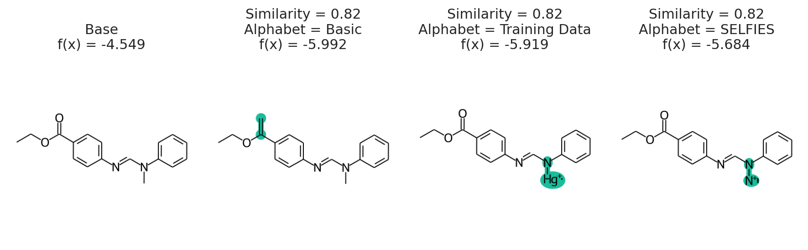
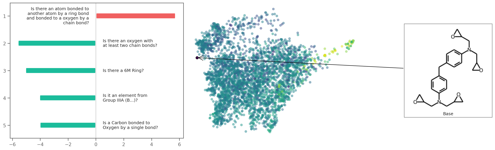
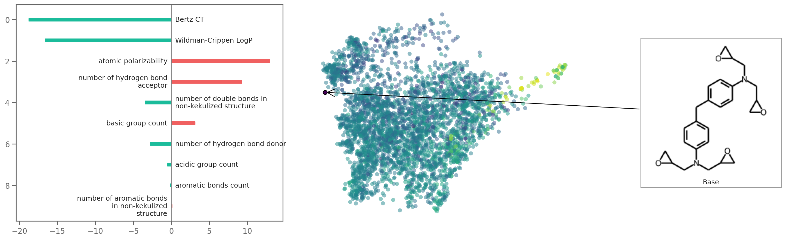
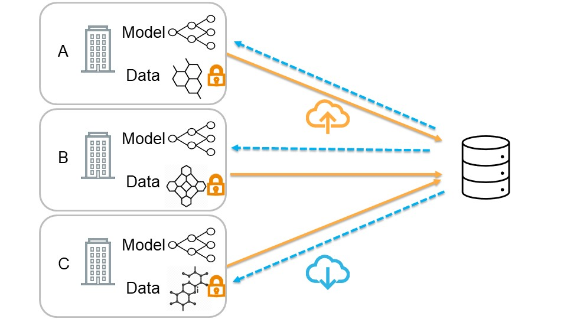
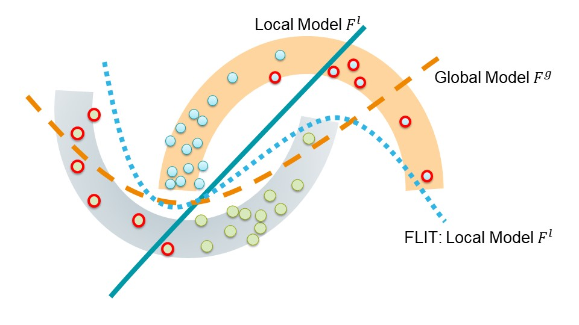

Iterative Molecular Discovery with Interpretable Deep Learning
Andrew White
University of Rochester
Department of Chemical Engineering
Research Overview
September, 2021
The Whitelab
✨deep learning✨
Given $\vec{x}$ and $y$, find a function $\hat{f}(\vec{x})$ that predicts $\hat{y}$
\[ \hat{y} = \sigma\left(\mathbf{W}X + b\right) \]- $\sigma$ non-linear activation
- $\mathbf{W}$ trainable weights
- $\mathbf{W}$ trainable bias
I wrote a book on it: whitead.github.io/dmol-book
Example of a Neural Network

Inductive Bias
Explicit choices made in architecture that reflect data-generation or solution space.
Inductive Bias
Mol Graph

Point Cloud

Inductive Bias
Mol Graph
- atom permutation equivariance
- bond permutation equivariance
Point Cloud
- atom permutation equivariance
- translation equivariance
- rotation equivariance
Inductive Bias
Mol Graph
- atom permutation equivariance
| C | O | N | $\hat{f}(x)$ | |
|---|---|---|---|---|
| 0 | 1 | 0 | 0 | 0.3 |
| 1 | 1 | 0 | 0 | 0.8 |
| 2 | 1 | 0 | 0 | 0.1 |
| 3 | 1 | 0 | 0 | 0.0 |
| 4 | 1 | 0 | 0 | 0.0 |
| 5 | 1 | 0 | 0 | 0.0 |
| 6 | 1 | 0 | 0 | 0.2 |
| 7 | 1 | 0 | 0 | 0.5 |
| 8 | 1 | 0 | 0 | 0.9 |
| 9 | 1 | 0 | 0 | 0.6 |
| 10 | 0 | 1 | 0 | 0.3 |
Inductive Bias
Mol Graph
- atom permutation equivariance
| C | O | N | $\hat{f}(x)$ | |
|---|---|---|---|---|
| 3 | 1 | 0 | 0 | 0.0 |
| 1 | 1 | 0 | 0 | 0.8 |
| 2 | 1 | 0 | 0 | 0.1 |
| 0 | 1 | 0 | 0 | 0.3 |
| 4 | 1 | 0 | 0 | 0.0 |
| 5 | 1 | 0 | 0 | 0.0 |
| 6 | 1 | 0 | 0 | 0.2 |
| 7 | 1 | 0 | 0 | 0.5 |
| 8 | 1 | 0 | 0 | 0.9 |
| 9 | 1 | 0 | 0 | 0.6 |
| 10 | 0 | 1 | 0 | 0.3 |
Inductive Bias
Example
Point Cloud
- atom permutation equivariance
- translation equivariance
- rotation equivariance
Data/Training Tricks
| Method | Equivariance |
|---|---|
| Matrix Determinant | Permutation Invariance |
| Eigendecomposition | Permutation Invariance |
| Reduction (sum, mean) | Permutation Invariance |
| Pairwise Vector/Distance | Translation/Rotation Invariance |
| Angles | Translation/Rotation Invariance |
| Trajectory Alignment | Rotation/Translation Invariance |
| Molecular Descriptors | All Invariant |
| Training/Testing Augmentation | All Invariant |
Representation and Model Decisions
SMILES
CCCC1=CC=CC=C1C(=O)
N2CCCC[C@H]2C3CCCC3
Sequence Network
(1D Conv, RNN, Transformer)
Mol Graph
Graph Neural Networks
Points
Equivariant Neural Networks
Representation and Model Decisions
SMILES
Preferred
Mol Graph
If you must
Points
Avoid
The Power of Text
Text is excellent at predicting scalars — invariant to permutations.* Training is fast, implementations are easy, available in javascript🚀
Predicting Chemical Shifts with GNNs📊
Yang, Z., Chakraborty, M. & White, A. D. Predicting chemical shifts with graph neural networks. Chemical Science (2021).
Inductive Bias
- Chemical shift is per-atom. Need perm equivariance
- Chemical shift should be position dependent
- Chemical shift should not use descriptors to generalize
Inductive Bias
- Chemical shift is per-atom. Need perm equivariance
- Chemical shift should be position dependent
- Chemical shift should not use descriptors to generalize
Graph Neural Network with Relative Distances
Graph Neural Network with Relative Distances

Graph Neural Network

Graph Neural Network

Graph convolutional neural network example.
Graph Neural Network Architecture (structure of $f(\vec{r})$)

Parameters
- 2,262 proteins, 361 metabolite molecules
- 5 million chemical shifts (526,000 fragments)
- Network Size: 3 edge FC layers (tanh), 4 GCN (relu), 3 FC Layers (tanh)
- Withheld 20,000 fragments (180,000 chemical shifts)
- Adam optimizer (0.001), huber loss, 0.15 dropout, 128 node feature dim, 4 edge feature dim
| H RMSD | H \(r\) | H\(^\alpha\) RMSD | H\(^\alpha\) \(r\) | Parameter Number | |
|---|---|---|---|---|---|
| Perfect | 0.176 | 0.965 | 0.138 | 0.967 | |
| Model (H) | 0.459 | 0.781 | 0.264 | 0.878 | 1,185,437 |
| Model (all) | 0.527 | 0.718 | 0.293 | 0.844 | 1,185,437 |
| Medium | 0.511 | 0.712 | 0.290 | 0.848 | 297,181 |
| Small | 0.501 | 0.726 | 0.288 | 0.849 | 42,123 |
| Weighted | 0.471 | 0.766 | 0.274 | 0.865 | 1,185,437 |
| SHIFTX+ | 0.455 | 0.787 | 0.248 | 0.890 | |
| SHIFTX+\(^*\) | 0.378 | 0.836 | 0.197 | 0.932 | |
| CS2Backbone | 0.716 | 0.418 | 0.417 | 0.708 |
Edge Feature Choice

Molecule Types

Salt Bridge Sensitivity
Salt Bridge Sensitivity

pip install nmrgnn

XAI with Counterfactuals🔦
Wellawatte, G. P., Seshadri, A. & White, A. D. Model agnostic generation of counterfactual explanations for molecules. (2021).
What is an explanation of a prediction?
- Justification: reasoning for using a prediction, like test error
- Interpretability: "the degree to which an observer can understand the cause of a decision"
- Explanation: a presentation of information intended for humans that give the context and cause for a prediction
Instance Explanations
- Feature Explanation: which features contributed most to outcome?
- Contrastive Explanation: what would the outcome be if the features were different?
- Counterfactual Explanation: what are the closest features with a different outcome?
Counterfactual
My grant proposal was rejected from NSF. If I had correctly formatted my references, it would have been funded.
Chemistry Counterfactual

Counterfactuals are solution to optimization. Given prediction $x,\hat{f}(x)$, find $x'$ with
\begin{aligned} \texttt{minimize}&\quad d(x, x')\\ \texttt{such that}&\quad \hat{f}(x) \neq \hat{f}(x') \end{aligned}
Challenging because optimization requires $\nabla_x\hat{f}(x)$
Use STONED Method to enumerate chemical spcae

Output

Accuracy of method depends on being able to generate close, interpretable structures near $x$.
- STONED: Generate structures with generative property of SELFIES
- PubChem: Sample nearby structures deposited in PubChem
Alphabet of plausible tokens
pip install exmol

Descriptor Explanations🍋
Gandhi H, & White, A. D. Local surrogate models for descriptor explanations (2021)
Unpublished
Counterfactuals are fundamental
They are one of the major theories of explanations in philosophy, including within it causality.
What about practicality? Can we act on these explanations?
Local General Explanation
Explain using local space around prediction with surrogate interpretable model
\[ \hat{y} = \beta \mathbf{X} \]where $\mathbf{X}$ are descriptors like solubility or number of hydrogen bonds
Weighted Local Surrogate Model 🍋
Which features were significant for weighted linear regression around base?
\[ \DeclareMathOperator*{\argmax}{arg\,max} t_j = \frac{\hat{\beta_j}}{\sigma_{\beta_j}},\quad \hat{\beta} = \argmax_{\beta} \sum_i w_i\left(\hat{y}_i - \beta\mathbf{X}\right)^2 \] \[ w_i = s(x_i, x_b) \]What descriptors?
- 160 MACCS Keys -- Are there nitrogen containing rings?
- Solubility
- Number of hydrogen bond donors
- Number of heavy atoms
Explaining with MACCS Keys
Explaining with Descriptors
Collaborative ML🤗
Zhu W, White AD, Luo J Federated Learning of Molecular Properties in a Heterogeneous Setting (2021).
deep learning =
big data
Chemical data is valuable and siloed. Enough data exists, but it is not shared
Federated 𓃏 Learning
Rather than share training data, share your model
| Dataset | Centeralized Training | Federated Learning | |||||||
| \(\alpha\) | MolNet* | FedChem*\(_{\textrm{ours}}\) | FedAvg | FedProx | FedFocal | FedVAT | FLIT\(_{\textrm{ours}}\) | FLIT+\(_{\textrm{ours}}\) | |
| FreeSolve\(\Downarrow\) | 0.1 | 1.40 | 1.430 | 1.771 | 1.693 | 1.686 | 1.371 | 1.634 | 1.228 |
| 0.5 | 1.445 | 1.376 | 1.322 | 1.299 | 1.366 | 1.127 | |||
| 1 | 1.223 | 1.216 | 1.294 | 1.150 | 1.277 | 1.061 | |||
| Lipophilicity\(\Downarrow\) | 0.1 | 0.655 | 0.6290 | 0.6361 | 0.6403 | 0.6403 | 0.6556 | 0.6563 | 0.6392 |
| 0.5 | 0.6306 | 0.6365 | 0.6365 | 0.6333 | 0.6368 | 0.6270 | |||
| 1 | 0.6505 | 0.6474 | 0.6474 | 0.6488 | 0.6443 | 0.6403 | |||
| ESOL\(\Downarrow\) | 0.1 | 0.97 | 0.6570 | 0.8016 | 0.7702 | 0.8022 | 0.7776 | 0.7788 | 0.7642 |
| 0.5 | 0.7524 | 0.7382 | 0.7708 | 0.7243 | 0.7426 | 0.7119 | |||
| 1 | 0.7056 | 0.6828 | 0.6822 | 0.7253 | 0.6705 | 0.6998 | |||
| QM9\(\Downarrow\) | 0.1 | 2.35 | 0.0890 | 0.5889 | 0.6036 | 0.6164 | 0.5606 | 0.5713 | 0.5356 |
| 0.5 | 0.5906 | 0.5751 | 0.6059 | 0.5656 | 0.5658 | 0.5222 | |||
| 1 | 0.5786 | 0.5691 | 0.5822 | 0.5602 | 0.5621 | 0.5282 | |||
Treating Heterogeneous Data
Focus on points of high error and disagreement
Future of Deep Learning
Easy sharing of models, rather than data, to build global predictive models. Already used in location data in phones, training on image recognition, speech.
Perspective on GPT-3/Codex in chemistry